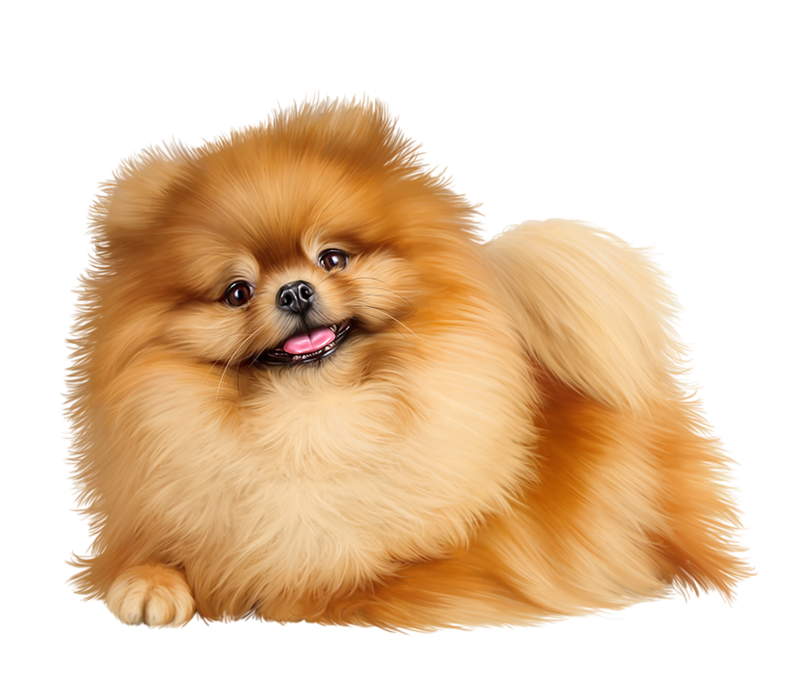
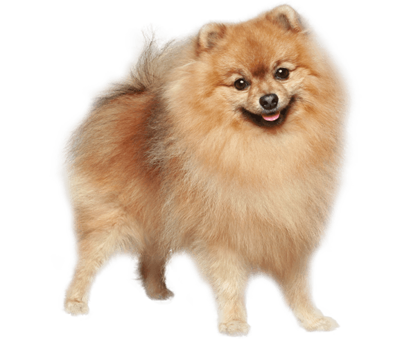

- Померанский шпиц(Померанец) 
- Порода собак, относящаяся к категории «Шпицы и породы примитивного типа» по классификации МКФ. У померанца шерсть ватная, мягкая и набивная, мордочка короткая, ещё у померанцев лоб пушистый. Кроме того, при ежедневном расчёсывании померанцы редко линяют. Воспитание и уход Шпиц понятлив, но всё же нуждается в постоянной дрессировке, так как без неё он станет непослушным, вредным и агрессивным. В пять месяцев он легко усваивает все необходимые команды. Шпиц сам прекрасно ориентируется в ситуации и делает всё, чтобы заслужить одобрение хозяина. Шпицев категорически нельзя стричь, разрешена только легкая окантовка по породе. При постоянных стрижках нарушается структура шерсти, постепенно исчезает остевой волос, прежнюю шикарную шубку в некоторых случаях бывает вернуть уже невозможно. Возможно развитие такого заболевания, как аллопеция X. При правильном уходе и регулярном вычёсывании собака не будет линять и раскидывать шерсть по дому, оставлять её на мебели и коврах. Выпавшие волоски застревают в плотном подшёрстке, а оттуда их можно аккуратно удалить щётками.
- Немецкий шпиц 
- Порода собак. Собака-компаньон. Немецкие шпицы являются потомками торфяной собаки каменного века «canis familiaris palustris Ruthimeyer» и более позднего свайного шпица. Считаются старейшей в Средней Европе породой и предками множества других пород. Немецкий шпиц обладает хорошим здоровьем, уравновешенным характером, удобен в содержании, он привязан к хозяину, обладает прекрасным умом и легко поддаётся дрессировке. Это очень умные собаки, ласковые и старательные. Немецкий шпиц считается отличным другом и компаньоном. Если правильно воспитать шпица, то он может лаять только по команде. Немецкие миниатюрные шпицы склонны к ожирению.
Более подробную информацию можно найти в интернете нажав на кнопку: ТЫК